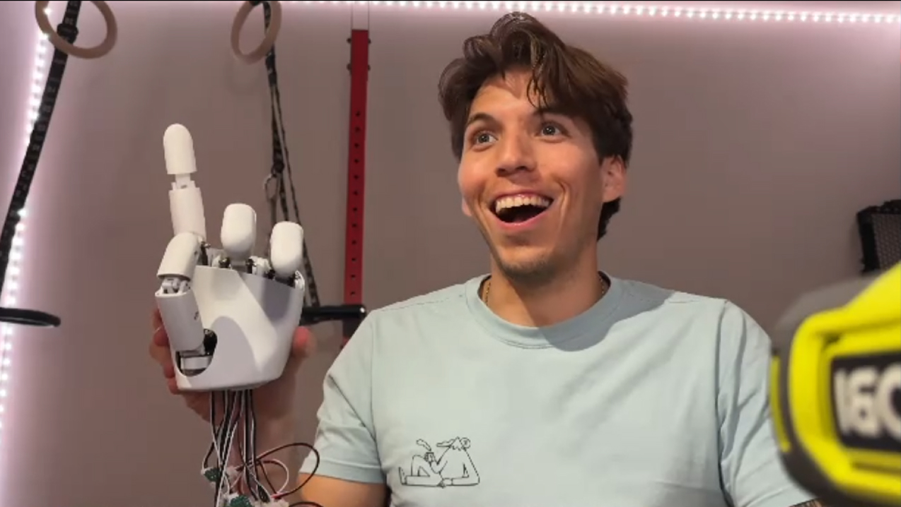

Robot Hands (2026)
At the start of 2026, I had a bunch of conversations with teams at Sunday Robotics, Figure AI, and 1X. After checking out the robots and meeting their hardware teams, it was very clear that the hardest hardware problem in humanoid robots, as deemed by the people building them, is hands.
Elon had previously mentioned that Optimus hands were the most mechanically complex part of the system (really good Lex Fridman interview). Overall this got my interest.
I decided to try building a hand myself. Instead of designing a hand from scratch, I started with the open-source AmazingHand design from Pollen Robotics (now part of Hugging Face). This is a low-degree-of-freedom design that appeared fairly simple, so I figured it was a good place to start.
Eventually, the idea is to iterate the design and make it my own.